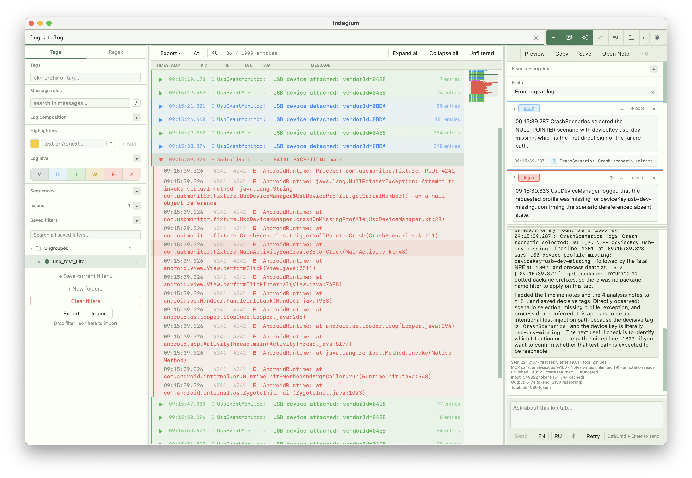

Read
Open logcat, bug reports, and large traces in a calm, native workspace.
The Log Analysis Studio
Indagium is a desktop workspace for investigating Android logcat files — from the first strange line to a clear, shareable explanation.
macOS · Windows · Linux

The case, not just the file
Work through the real sequence of events without flattening it into an endless stream of text. Filter, compare, fold recurring behavior, connect source and video, and leave an explanation the next person can follow.
Open logcat, bug reports, and large traces in a calm, native workspace.
Follow the timing, repetition, thread activity, source, and video around an incident.
Annotate the proof and export a record that is useful outside the app.
Collected evidence
Combine level, tag, package, message, PID, and TID rules without changing the original log.
Collapse recurring behavior, surface crashes, and see the structure inside a busy trace.
Add notes and context, then export evidence others can understand without reopening the whole log.
A connected investigation
The app enters the foreground.
A request begins repeating.
A blocking delay stands out.
The proof is annotated and shared.
Exhibit D / Assisted investigation
Bring your preferred local or hosted AI provider into the active log. The assistant can investigate using Indagium’s tools, while every file-changing action stays under your control.
Explore the AI assistantExhibit E / Corroborating evidence
Attach a screen recording to a log line and move through them together. When a visual symptom needs an exact timestamp, the evidence remains in one place.
Explore video syncReady for the next incident
Start with the evidence. Finish with an explanation.
Download Indagium